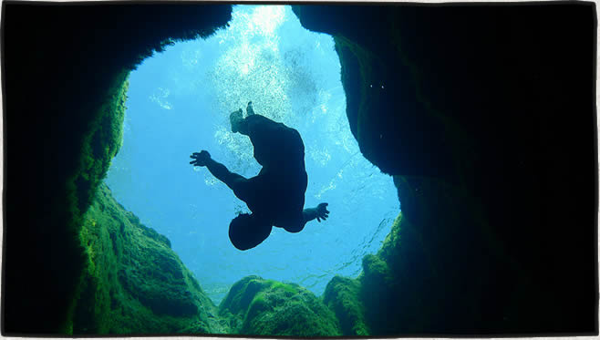
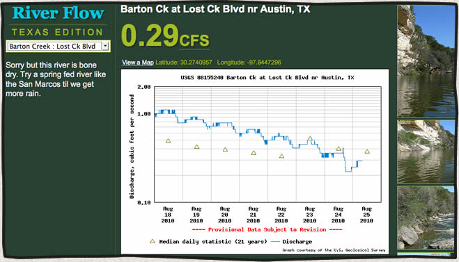
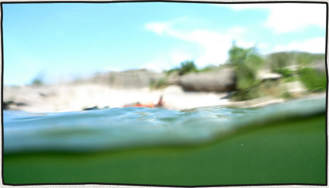
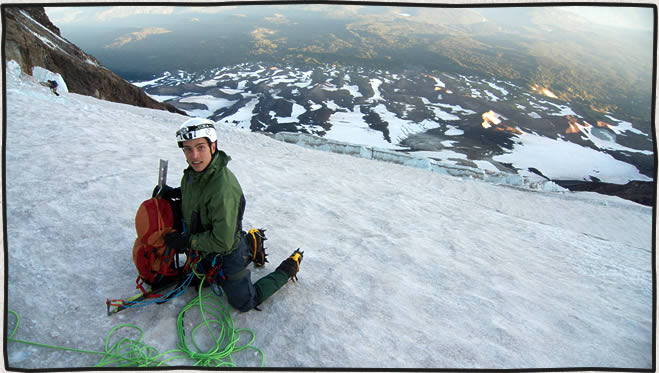
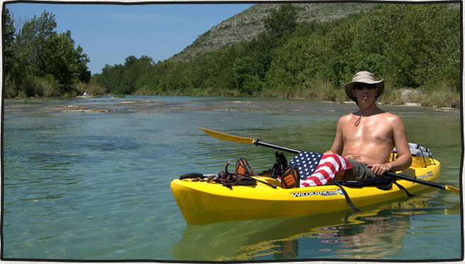
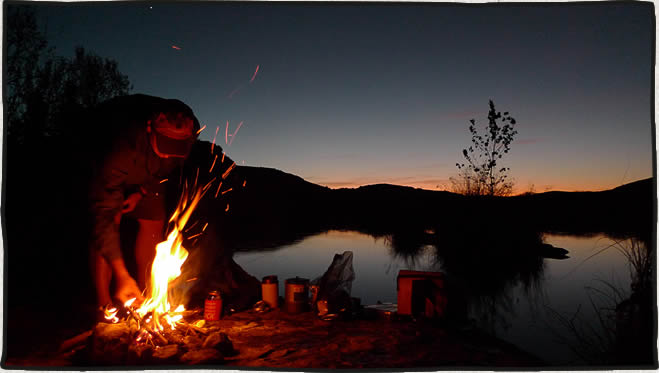
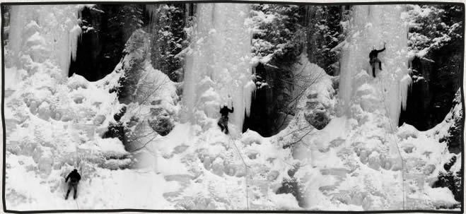
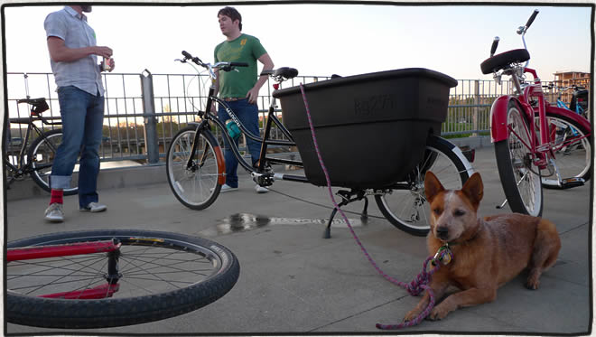
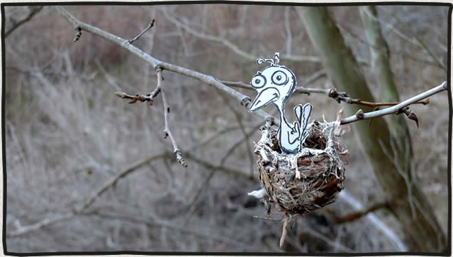

Employee travel guides on HomeAway
posted Sep 25, 2013 Original photo of Diving in Jacob’s Well on Flicker
I recently contributed a couple of employee travel guides / trips reports to HomeAway.com. The travel guides were lacking in outdoor adventures. One is titled Austin, TX Outdoor Adventures and covers all of the rock climbing walls on the Greenbelt, kayaking & tubing Barton Creek, and a few more activities and places. A second article titled Climbing Mountains Around Seattle, WA covers Mount Rainier, Mount Adams, Mount Baker, Mount Shuksan, and Glacier Peak.
Read more...Texas River Flow, my 10k contest entry
posted Aug 25, 2010 Part of the app is currently broken due to a change in the USGS api.
My entry in the aneventapart10k contest is a little application that lets you check the river flow (cfs) of Texas rivers. The application gets it’s data from the “USGS water data service“http://waterdata.usgs.gov/nwis along with related photos from flickr.
Read more...The Devils River, Memorial Day 2010
posted Jun 21, 2010 Put in at Baker’s Crossing on Friday, May 28th and paddled to The Indian Head Ranch 40 miles down river.
Read more...Adam's Glacier Route, Mount Adams
posted Jun 16, 2010 With seven of us on the climb this year it felt more like an expedition.
Read more...Devils River Kayaking, July 4th 2009
posted Jul 22, 2009 We put in the kayaks at Bakers Crossing on Friday, July 3rd. The next 2 days we covered 23 miles to our take out at Gerald Baily’s place, Devils River Outfitters.
Read more...Devil's River Kayaking
posted Apr 14, 2009 On Friday, November 28th through Monday, December 1st Mike Longfellow and I paddled the Devils River from Baker’s Crossing to Rough Canyon Marina (47 miles). This river is notoriously pristine and remote. The weather was perfect and there was plenty of good fishing and rapids along the way.
Comment [3]
Read more...Ice Climbing Video Made From Photographs
posted Apr 13, 2009 That’s me leading and Paul Bostrom following and taking the ice screws out.
The frozen waterfall is located just off the highway past Wolf Creek Ski area in Colorado.
Read more...Mount Rainier via the Kautz Glacier route
posted Apr 12, 2009
Rob, Ryan and I climbed the Kautz Glacier route on Mount Rainier, July 22 – July 25. We summited at noon on Thursday, July 24 (my birthday)
Read more...Madsen Cycles Bucket Bike
posted Apr 11, 2009 The first Saturday of SXSW 2009 was the Bike Hugger Mobile Social Ride. It was pretty short, fun ride around Austin starting at couple block away from Mellow Johnny’s bike shop. One girl had bike made from bamboo and horn. No one seemed to mind the ride was short since it ended with free bar-b-que, beer and a raffle ticket for chance to win one of two bikes available (also an apple tv and a bunch crumpler bags). Mine was the last number called and it was for the Madsen Cycles bucket bike.
Comment [1]
Read more...Project Nature
posted Mar 17, 2009 While climbing at Gus Fruh on the greenbelt one afternoon I saw an empty bird nest. I drew this little guy to fill the nest and leave behind for someone else to find. It probably sitting on a shelf in someone’s apartment now. A couple weeks later I checked on it while out climbing again – someone made off with the nest and all.
Read more...Get in touch
Patrick [at] MountainDrawn.com